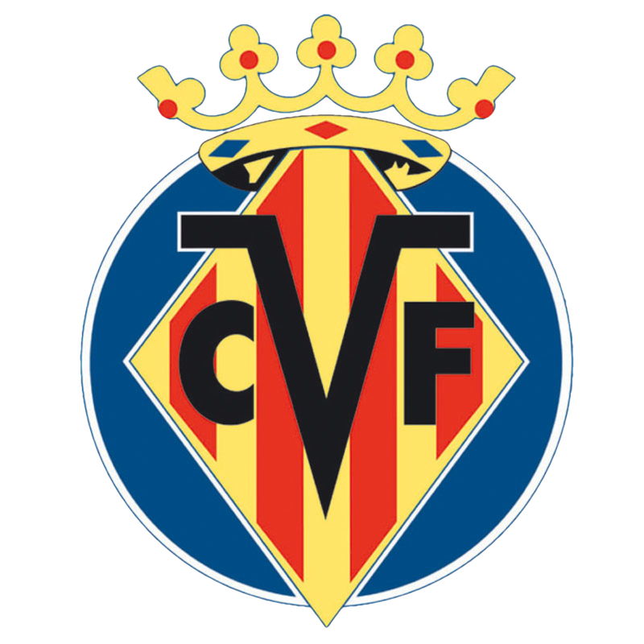
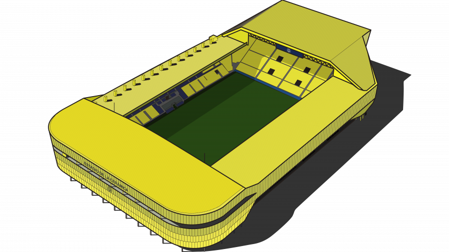
Dettagli Squadra
Marcelino
Fernando Roig Alfonso
1923
Estadio de la Cerámica
Portieri
1 Luiz Júnior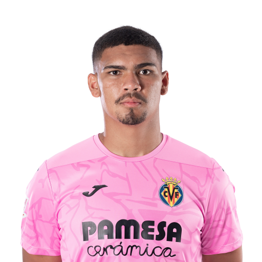
13 Diego Conde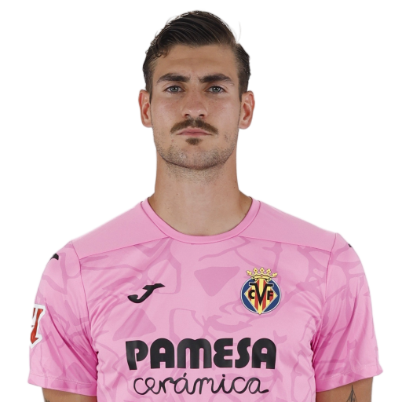
31 Iker Álvarez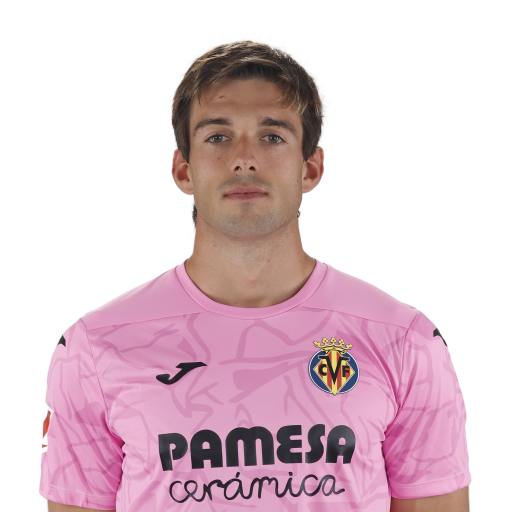
Difensori
2 Logan Costa (DC)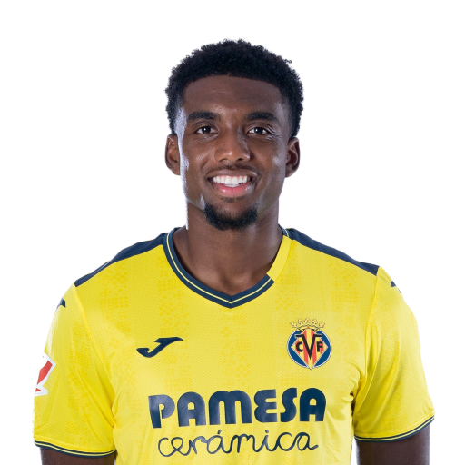
3 Raúl Albiol (DC)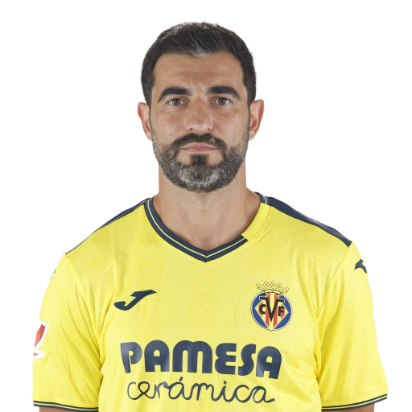
4 Eric Bailly (DC)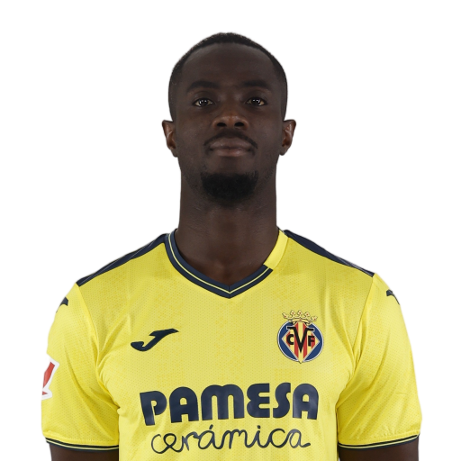
5 Willy Kambwala (DC)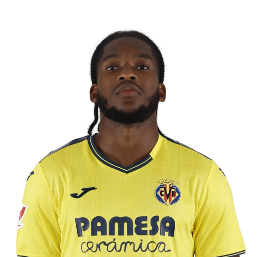
8 Juan Foyth (TD)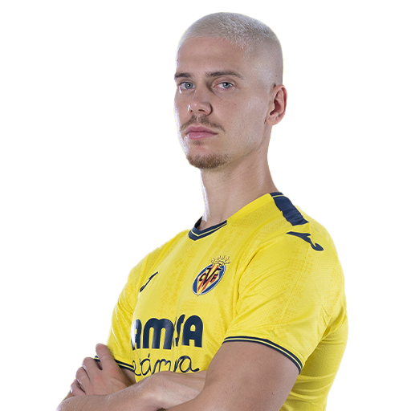
12 Juan Bernat (TS)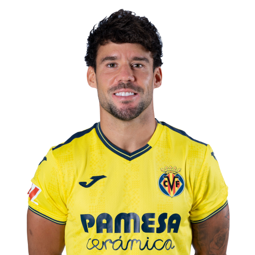
17 Kiko Femenía (TD)
23 Sergi Cardona (TS)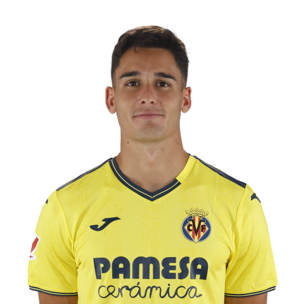
24 Alfonso Pedraza (TS)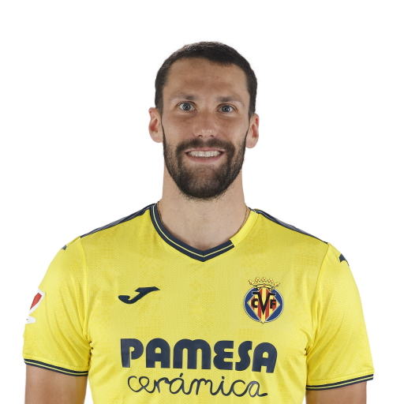
Centrocampisti
6 Denis Suárez (CC)
10 Dani Parejo (CC)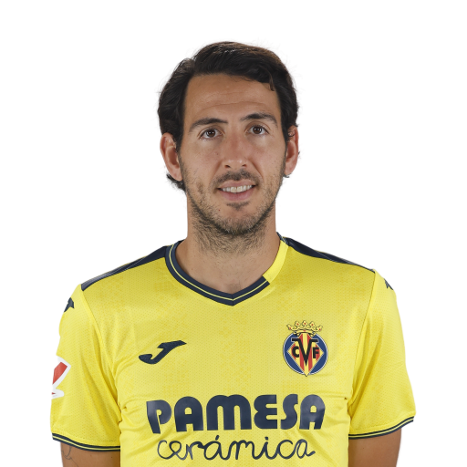
14 Santi Comesaña (CC)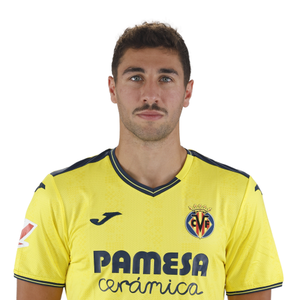
16 Álex Baena (CC)
18 Pape Gueye (CC)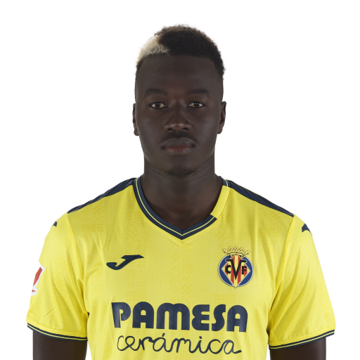
20 Ramón Terrats (CC)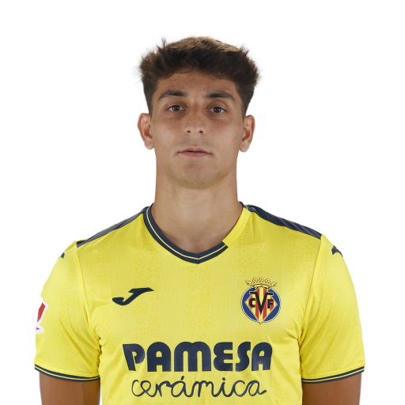
Attaccanti
7 Gerard Moreno (AT)
11 Ilias Akhomach (AD)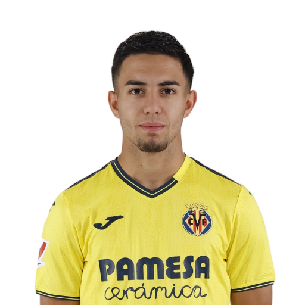
15 Thierno Barry (AT)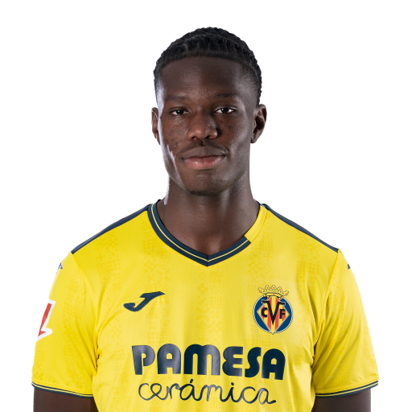
19 Nicolas Pépé (AD)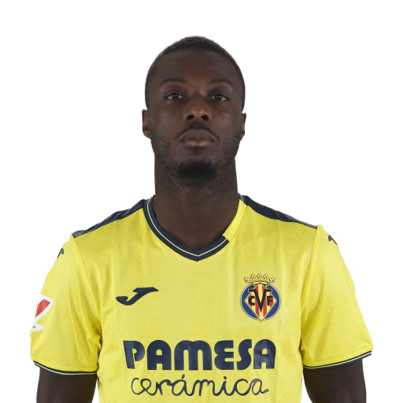
21 Yéremy Pino (AD)
22 Ayoze Pérez (AS)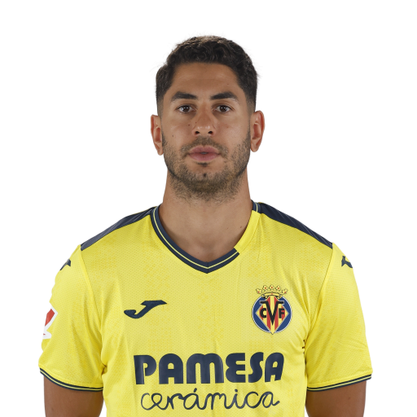